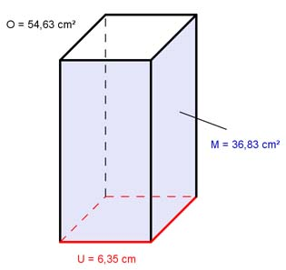

Aufgabe 5 Ein Prisma hat eine Oberfläche O von 54,63 cm², eine Mantelfläche M von 36,83 cm² und einen Umfang U der Grundfläche von 6,35 cm. Wie groß sind die Grundläche G und die Höhe h?  a) O = M + 2 * G |-M O - M = 2 * G |:2 O - M 54,63 cm² - 36,83 cm² G = ------- = ------------------------ = 8,9 cm² 2 2 b) M = U * h |:U M 36,83 cm² h = --- = ----------- = 5,8 cm U 6,35 cm